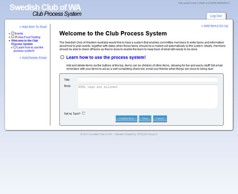
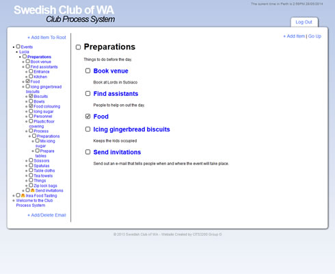
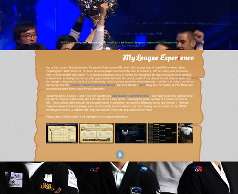
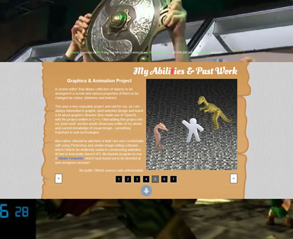
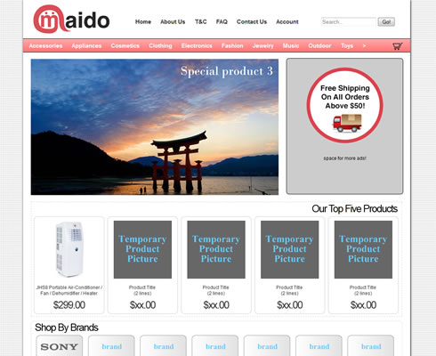
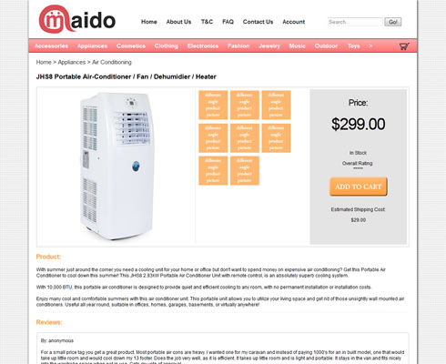
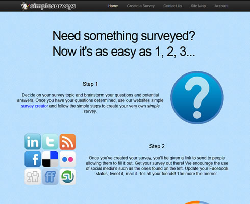
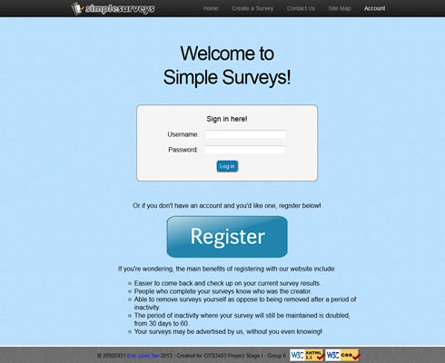

Club Process System
 A fully functioning prototype of an online system which allows
members to enter tasks and information about how to plan events, together with dates
of when those tasks should be e-mailed out automatically by the system. Members
are able to check off tasks as they're done to enable the team to keep track of what still
needs to be done.
This website was my team's solution to our client's needs (in a university course based
on professional computing - we were each allocated 60 hours budget to work on this project),
where I worked as the main developer - personally designing the entire GUI as well as a
fair portion of the back-end database services. This website was created using Ruby on Rails as
the framework.
To log-in to our prototype, our sample account is:
Username: swedishclubwa@gmail.com
Password: cits3200
My Riot Games Web Tech Intern Cover Letter
 A fairly interactive and interesting website design I put together as
my cover letter for an application towards a position at Riot Games. My main goal for this
particular design was to create a fluid and story-telling like journey while scrolling
down the page, covering who I am and why I should be given the job.
It makes use of the now popular parallax scrolling together with basic layout structure
to create a fluid and continuous flow through-out the page. It was very enjoyable understanding
how to make parallax scrolling work and continuing to learn new things with web design, however
in the end this was an unsuccessful application.
maido | Japanese Online Retailer
 A mock-up of a Japanese-based online retail store that will eventually
sell products produced in Japan to the world via e-commerce. The idea was then in its
proposal stages, when I decided to help spring the idea to life by creating a mock-up
website to advertise the concept.
Although here it is just a mock-up (with no database support), it contains many features found
in current online website stores and the main design feature is the simplistic nature of the
site, where by people all over the world (not necessarily tech-literate) will easily be able
to use and navigate through the store. I had planned to design a working prototype for this
website using Ruby on Rails.
This was a fairly quick work project (totalling about 8 hours), using entire HTML5, CSS3 and
JavaScript to construct the functioning skeleton for the website, with help of PHP to deploy
it to Heroku.
SimpleSurveys
 The static version of a simple survey creation and system, allowing
users to create an online survey and have other users take the survey anonymously, where the
creator is able to view a report of results.
My team and I then worked on building a database driven application based on this website,
also hosted on Ruby on Rails. The source code is marked as private (unfortunately - I wouldn't
want to make it public as my university commonly re-uses project specifications) on GitHub
and the online hosted website itself was on a temporary university given server and hence
has been taken down. You may still view my self-made static website however.
Do keep in mind this was the very first HTML-based website I created from scratch (without
using something like Dreamweaver!), and hence being relatively new I had not picked up many
miniscule coding conventions. For my first attempt at a website I am quite proud of this still.
...more to come!